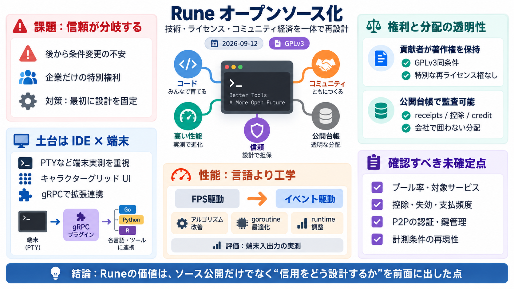

Rune is now open source. Rune Blog
Image 1: Rune IDE showing its character-grid interface, with an editor, a file tree, and an agent session side by side. …

Image 1: Rune IDE showing its character-grid interface, with an editor, a file tree, and an agent session side by side. …
| | | | | --- | | | ernestrc 3 hours ago | prev | next (javascript:void(0)) Author here! The post explains som…
i’ve written graph databases in both golang and rust. both languages have really neat paradigms for their respective eco…
Zig says: the developer is responsible. We’ll give you the tools, the visibility, the explicitness — but the judgment is…
Performance should be comparable to Lua and Python (And eventually LuaJIT when we have cranelift). Scripts should compi…